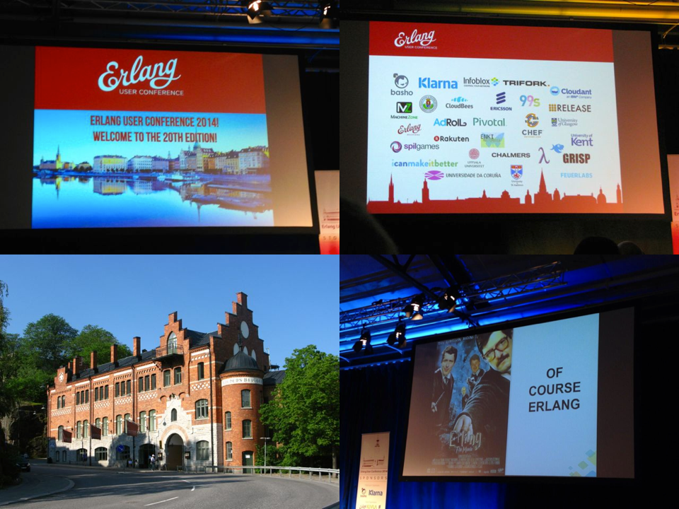
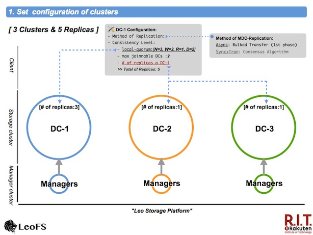

July 28, 2014
Introduction
This article will get you going with a how to develop and architect Java-client application for LeoFS. This article assumes that you have already installed LeoFS environment on your local or remote node. See Getting Started with LeoFS for more Information.
Installation and Setup S3 Java-client
The easiest way to install Java on your machine is through the yum or apt package installer. Then we need some additional Apache Ant.
Read more
Software Development Engineer at Rakuten
June 25, 2014
Introduction
This article will get you going with a how to develop and architect Ruby application for LeoFS. This article assumes that you have already installed LeoFS environment on your local or remote node. See Getting Started with LeoFS for more Information.
Installation and Setup S3 Ruby-client
The easiest way to install Ruby on your machine is through the yum package installer. Then we need some additional Ruby dependancies.
Read more
Software Development Engineer at Rakuten
June 16, 2014
I attended and made a presentation at Erlang User Conference 2014 - the 20th Conference in Stockholm, which is a two-day tech conference focused on the Erlang programming language. It had very informative sessions for me.

I share several impressive sessions in this conference.
1st Day - June 9th, 2014
I made a presentation about design and architecture of LeoFS as well as demonstrate how developers/users are able to easily run and manage LeoFS in their environments for 45min, which was forcused on the overview, the benchmark report and the multi datacenter replication.
I shared the future plan of LeoFS. We’re aiming to centralise huge amount and various kind unstructured data in LeoFS. We have been tackling to implement NFS Support as another way of the connection. Because we thought we support both S3/REST-API for online transaction and NFS not FUSE for backend services in order to realise DATA-HUB which is needed at our company and services.
Also, Rakuten software engineer, Hiroki, He shared LeoFS administration at Rakuten for 7min in this presentation. He introduced two use cases of LeoFS, which are the storage platform and the file sharing service for in-house.
I had the great opportunity to deliver the presentation at the EUC2014 because our presentation got around 40 attendees and sevearal questions for it. And also, I acquired high potential users through this conference.
Read more
May 22, 2014
Introduction
This article will get you going with a PHP-client application how to develop and architect applications for LeoFS. This article assumes that you have already installed LeoFS environment on your local or remote node. See Getting Started with LeoFS for more Information.
Installation & Setup PHP-client
CentOS, Fedora & RHEL:
##### Install PHP, SDK and Dependencies #####
$ sudo yum install php
$ php –v
Debian & Ubuntu based Installation
##### Install PHP, SDK and Dependencies #####
$ sudo apt-get install php5 php5-json php5-curl
$ php –v
###### Download Sample Project #####
$ git clone https://github.com/leo-project/leofs_client_tests.git
$ cd aws-sdk-php
$ curl -sS https://getcomposer.org/installer | php
$ sudo php composer.phar install
About the Sample
This sample application is designed to show you how to:
- Declare a dependency on the AWS SDK for PHP using Composer.
- Read access keys from environment variables or define it statically in this sample we are using static entry.
- Instantiate an Amazon Simple Storage Service (Amazon S3) client.
- Interact with Amazon S3 in various ways, such as creating a bucket and uploading a file.
The project's README file contains more information about this sample code. If you have trouble getting set up or have other feedback about this sample codes, let us know on GitHub.
API Feature List
The storage API is compatible with the Amazon S3 REST API which means that any of the operations listed can be executed using any of the commonly available S3 libraries or tools.
Read more
Software Development Engineer at Rakuten
Apr 11, 2014
If you look at the big idea at LeoFS, what we're really focused on is High Scalability, High Availability and High Cost Performance Ratio because as you know, unstructured data have been exponentially increasing day by day, so we need to build Global Scale Storage System at low cost.
I've been considering how realize LeoFS's multi data center replication more simply without SPOF - Single Point Of Failure and degraded the performance.
Set configuration of clusters

First, it is necessary to configure consistency-level, max number of joinable clusters and number of replicas a data center both the local cluster and the remote cluster(s).
The 1st phase of multi data center replicaion also supported asynchronous replication between clusters
Read more
Apr 18, 2013
We made benchmarks for LeoFS v0.14.0 on Apr 12th. Regrading test-environment is as follows. We used typical spec of servers and CentOS 6.3. Also, LeoFS’s consistency level was the same as production settings.
Test Results
Test results is as follows. From each benchmark, we found the bottle-neck was disc I/O. Also, retrieving of small file size (average 128KB) has the room for an improvement. So We have been improving Leo's object-cache lib from this week.

Read more
Apr 16, 2013

We found storage problems in our company, A lot of services depended on Expensive Storages
which is stored any unstructured data such as images, documents and so on.
We should resolve 3-problems:
- LowROI - Low budget services cannot pay when using expensive storages.
- Possibility of SPOF - Depending on the budget, It is difficult to build redundant-structure with expensive products.
- Storage expansion is difficult during increasing data - It cannot easily add (expand) an “Expensive Storage”.
Aim At
As the result of our try and error, we finally got satisfy our storage requirements which are 3-things:
- ONE-Huge storage:
- It’s so called storage platform.
- Non-Stop storage:
- The storage-system is requested from a lot of web services, which require is always running.
- Specialized in the Web:
- All web-services need to easily communicate with the storage-asystem. So we decided that provide NOT FUSE but REST-API over HTTP. Using FUSE is depending on specific storage, so it cannot definitely scale.
Read more